Серебро века Просвещения в Европе

В историю мировой культуры XVIII в. вошел как классический век Просвещения. Идеология Просвещения возникла в условиях кризиса феодальной системы, появления в ее недрах ка — питалистических производственных отношений. Эпоху Просвещения в Западной Европе предваряет широкоразвернувшийся в XVII в. общий прогресс практических знаний, необходимых для нужд материального-производства. Научно-технический прогресс сопутствовал формированию анти — феодальной идеологии. Особенно заметным был прогресс в горнорудном деле, , свидетельством чего стали монеты, появившиеся после Брауншвейг-Люнебурга и в других, иногда мельчайших германских государствах.
Саксония — ГеннебергВо многих отношениях «первым» является талер, отчеканенный из серебра месторождения Ильменау. Он был почти первой монетой по времени (так как отчеканен еще в XVII в.) и главное первой и, пожалуй, единственной, на которой вместо портрета князя, графа и т. п. показаны горнорабочие, добывающие руду, а на оборотной стороне рядом с гербом и другими геральдическими атрибутами (рыцарскими шлемами и султанами) стоят те же горнорабочие, но в своей старинной парадной форме с декоративными кайлами — тростями в руках. На этой стороне монеты кольцевая надпись: «Кня-жеств Саксонии с Геннеберг-Ильменау единый горный талер». На другой стороне, над сидящей на заднем плане на горе курицей, надпись: «Охраняет и умножает» (рис. 94).
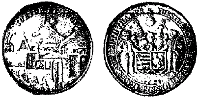
Рис. 94. Талер из серебра Ильменау 1698 г.
Талер этот отчеканен в 1698 г. в г. Ильменау, сто-.лице графства Геннеберг (Куриная гора), и на монете показаны разрез и панорама Ильменауского месторождения.
В литературе раньше других об этом месторождении упоминает Г. Агрикола. Перечисляя месторождения серебра, он писал в 1546 г.: «Не очень богатый рудник, получивший теперь тюрингское название Ильменау, расположен в Семанавальде». О ходе эксплуатации этого месторождения в последующие примерно 80 лет данных не найдено. Затем встречены сведения, что в 1623 г. рудники дали доход 21 000 талеров, но в 1624 г. прорвавшаяся вода затопила крупнейшие из них по р. Штурм-:хайде, и 14 насосных установок, приводимых в действие посредством водяных колес или лошадьми, не смогли справиться с водой. Эти рудники очень сильно пострадали в ходе Тридцатилетней войны. К. Маркс отмечает, что после того как 12 сентября 1631 г. войска курфюрста Саксонского отобрали у императорских войск Лейпциг, «…состоялось соглашение: шведы идут через Тюрингию во Франконию… саксонцы должны итти через Чехию и Силезию». В сентябре все города по пути во Фран-конию были заняты шведами. Ф. Шиллер об этом эпизоде пишет[35], что «…шведская армия через Готу и Арнштадт прошла двумя отрядами весь Тюрингенский лес, вырвала мимоходом графство Геннебергское из рук императорских войск». Война надолго отразилась на рудниках Ильменау, ибо шведы при первой возможности приводили немецкие горнорудные предприятия в негодность, видя в них конкурентов своему процветающему горному промыслу.
В то время хозяевами Ильменауских рудников были Саксонские герцоги, так как род геннебергских графов прекратился еще в 1589 г. со смертью последнего из лих Георга-Эрнста, и маленькое государство — Генне-бергское графство — перешло к Саксонии. Герцоги после Тридцатилетней войны неоднократно проектировали возобновить эксплуатацию рудников Ильменау.
Но лишь в 1684 г. начались восстановительные и подготовительные работы. В 1691 г. было решено создать в Ильменау свой монетный двор. С 1693 по 1702 г. на нем было отчеканено 11 разновидностей талеров общим тиражом всего 40842 экземпляра, или в среднем 3700 штук каждой разновидности, т. е. талеры эти очень редки. Масса такого талера 29, 23 г, чистого серебра в нем 25, 98 г.
Первые шесть разновидностей (1693 — 1697 гг.) отличаются изображением геральдической «курицы на горе» посередине лицевой стороны (вместо рудника — в 1698 г.), а последние четыре (1699 — 1702 гг.) — других геральдических атрибутов. На всех талерах имеются разного рода надписи. Наиболее важной является кольцевая надпись в три строки (вокруг «курицы на горе») на первом талере 1693 г.: «После того, как с божьей помощью запасы металла в Ильменау вновь увели — чены, шахты перестроены, новые штольни пробиты, встречные воды мощными машинами выведены в пруды, прочный порядок в горном деле установлен и естествен-еые богатства земли вновь могут использоваться, повелел герцог Саксонский выбить эту памятную монету». Интересна и надпись на талере 1695 г.: «В красноватом поднимается белоснежное блестящее крыло». Таким поэтическим иносказанием сообщается, что серебро в. Ильменау находится вместе с медью.
Ильменауское месторождение является аналогом медистых песчаников Приуралья. Интерес к нему в России во второй половине XVIII в. виден из некоторых старых источников. Краткие, но ценные данные приводятся в одном анонимном труде: «Медь добывается в самом большом изобилии в Нейштадском, Геннеберг-ском, Фогтбергском горных начальствах, где она часто, так же как и серебро, попадается самородная».
Очень важные сведения сообщает И. А. Шлаттер: «При Ильменауском горном произведении добывают шиферы и песошные руды, однако к шиферу по большей части более бывает и содержит оной в центнере по меньшей пропорции четверть лота[36] серебра и полфунта меди, который при ямах[37] однажды по первому классу обжигается на свободном месте. А песошные руды не пожигаются, не токмо их толкут и в сплавку употребляют». Коротко о месторождении упоминает И. Ф. Герман: «Песошныя медныя руды добываются также возле Ильменау в Турингии».
Несколько десятков лет назад Ильменау (или Тю-рингенский лес в целом) начал фигурировать как пример обоснования разных точек зрения генезиса подобных месторождений, две из которых продолжают существовать и сейчас: сторонники первой рассматривают медистые песчаники как нормальные сингенетические осадочные прибрежно-морские образования; защитники второй полагают, что рудные скопления обязаны инфильтрационному переотложению меди грунтовыми водами, циркулирующими по отдельным пластам пермских пород. Так, И. С. Яговкин приводил Ильменауское месторождение в доказательство первой точки зрения: «…изверженные породы „красного лежня“, подлежащие медистым песчаникам, почти не содержат меди В некоторых местах (Ильменау) медистые сланцы окружены эрруптивами, но сланцы тем не менее бедны медью». К. И. Богданович, разделяя точку зрения о вторичном обогащении сланцев медью, повторяя М. В. Ломоносова, писал: «…примерами влияния боковых пород могут служить древние сланцы и породы пермской системы Тю-рингенского леса и Гессена, пересеченные жилами тяжелого шпата: где такие жилы пересекают битуминозные медистые сланцы, там появляются годные для добычи участки кобальтовых, никелевых и медных руд».
ГессенК. И. Богданович только что назвал новую территорию распространения медных инфильтрационных месторождений — Гессен, подтвердив данные нумизматики по этому вопросу. Известен гессенский «шауталер» (красивый талер) 1714 г. с портретом и титулом герцога Эрнста Людвига и панорамой месторождений Иттер на другой стороне (рис. 95, а). Над месторождением подпись «Gott hat seinen reichen segen Itter indich wollen legen» («бог захотел вложить свое богатое бла-гословление в тебя Иттер»).
В обрывах берегов реки Иттер показаны (не очень удачно) горные выработки, по прибрежной дороге отвозится руда. В каталоге А. Хесса (1893 г.) указывается, что это «a. d. Reiche Ausbeutethaler der Kupfergruben in Thai — Itter» («имперский горнорудный талер из руд медного рудника в долине Иттер»).
В новейшем издании немецкой энциклопедии Брок-кауз отмечается, что близ бывшего города Иттера в долине одноименной реки с XVII до XIX столетия находился знаменитый серебряный рудник. Геологическая карта свидетельствует, что Цехштейновое море имело связь с Полярным океаном в области современного Северного моря. Параллельно южным берегам Цех-штейнового моря в районе современного среднего течения Рейна несколько южнее впадения в него р. Нек-кара, к бассейну которой относится р. Иттер, проходила граница накопления медистых сланцев и песчаников.
Таким образом, месторождение Иттер легко отнести к типу серебросодержащих медистых песчаников или сланцев.
Имеется также несколько вариантов гессенских талеров, чеканившихся во второй половине XVIII в. (с перерывами) из серебра месторождения Бибер. Какого-либо горнозаводского сюжета на этих талерах нет, и лишь надпись, как, например, на талере герцога Вильгельма VIII 1754 г. «1/9 marck f. silber aus Bie» ber» — «1/9 марки чистого серебра из Бибера» — внизу оборотной стороны под гербами говорит о происхождении серебра (рис. 95, 6). Об этом месторождении коротко упоминает И.
С. Яговкин: «В Гессене (около Бибера) в толще нижнего цехштейна рудный пласт мощностью 0,3 — 1,5 м представляет углистый мергельный сланец, разрушенный в верхних горизонтах».
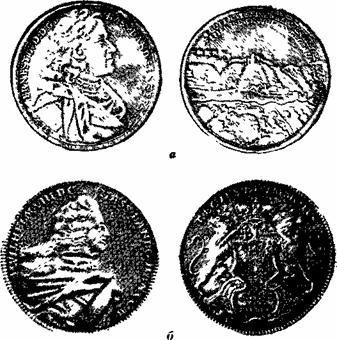
Рис. 95. Талеры из серебра Иттера (а) и Бибера (б).
Саксония (курфюршество)Имеются две интересные монеты, отчеканенные из серебра Фрейберга, появление которых косвенно объясняет В. А. Обручев. Он отмечал, что жилы колчеданисто-свинцовой (пирит — галенитовой) формации, в железной шляпе которых было впервые найдено серебро, развиты главным образом у города. На оборотной стороне талера 1733 г. показана панорама города Фрейберга w разрез рудника под ним (рис. 96, а).
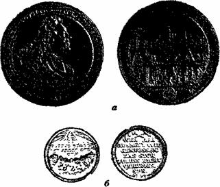
Рис. 96. Талер (а) и копия дуката (б) из серебра Фрейберга.
Второй монетой является отчеканенный во Фрей-берге в 1714 г. золотой дукат. Золото для него было добыто, вероятно, из колчеданных жил у Брейнсдорфа, где, как указывает В. А. Обручев, оно имелось в незначительных количествах. Может быть именно благодаря этому — крайне малой добыче — дукат отчеканен не в обычной (портрет, на обороте — герб) традиции. На одной стороне дуката показан штуф руды со знаками солнца и планет, означающими семь главных металлов, добывавшихся в то время в Германии (Солнце — золото, Венера — медь, Марс — железо, Сатурн — свинец, Юпитер — олово, Меркурий — ртуть и Луна — серебро); на другой его стороне — стихотворный текст: «Кто добычей руд желает пользоваться, не должен каяться и сердиться». Теми же штемпелями «монета» была отчеканена также и из фрейбергского серебра (рис. 96, б) г вероятно, для коллекционеров.
КирхбергОдин из редчайших в XVIII в. талеров — талер Кирхберга показан на рис. 97. На его лицевой стороне вокруг портрета титул: «Георг-Фридрих, бургграф Кирхберга, граф Саин-Витгенштейн, хозяин Фарнроды». Под портретом надпись в четыре строки: «родился 3 марта 1683, стал управлять 9 мая 1708, скончался 14 августа 1749, да упокоится в мире». На оборотной стороне — панорама г. Хамма и находящегося поблизости рудника «св. Михаила». По кругу надпись «Хахенбургско-сай — нинские рудники металлов, им самим восстановленные», .а внизу — «В блаженную память мужа непорочнейшая вдова из серебра рудника „св. Михаил“ сделала».
Кирхберг — старинный город в горах Хунсрюк, основанный в 1259 г. Он был резиденцией графов понхайм, а после прекращения их рода перешел сначала в совместное владение Пфальца и Бадена, а в XVIII в. — полностью к последнему.
Георг-Вильгельм, младший сын графа Саин-Виттген-штейна, получил в «удельное» владение небольшое поместье Фарнрода, но не имел надежд на наследование графской короны, в связи с чем поступил на административную службу к баденскому герцогу в качестве бургграфа Кирхберга[38]. Как уже говорилось, такие младшие отпрыски графских и княжеских семей были обычно более образованы и предприимчивы, поэтому Георг-Вильгельм занимался, видимо, с успехом и гор — ным делом, правда, довольно далеко ют г. Кирхберга, так как маленький городок Хамм расположен на правом берегу Рейна в горах Вестервальд.
Хахенбургские рудники в Сайнинском горном округе находятся на северном склоне Вестервальда (одного из хребтов Рейнских сланцевых гор) в верховьях рек Вид и Грос-Нистер, притока Зига. О серебряном руднике «св. Михаил» каких-либо данных выявить не удалось. В целом этот район очень коротко охарактеризовал посетивший его русский горный инженер Озерский: «Более обширный горный промысел имеет место на правом берегу Рейна, именно около Линца в княжестве Вид, предпочтительно в Зигенском округе, около Мю-зена и Гозенбаха, далее в Сайнинском округе… Не — сравненно обширнее разработка серебросодержащих свинцовых блесков в княжествах Зигенском, Сайнинском и Вид».
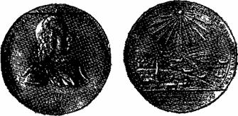
Рис. 97. Талер Кирхберга.
Таким образом, здесь разрабатывались серебросо-держащие галенитовые жилы. Выявление в зоне окисления жилы «св. Михаил» небольшой залежи с самородным серебром дало повод отметить это событие на монете.
Редкость талера обусловлена тем, что Георг-Вильгельм формально не имел права чеканки монет ни от имени города (Кирхберг не был имперским городом), ни от своего (поскольку он не был имперским графом). Его «непорочнейшая вдова» тем более не имела такого права, и эту монету в память о смерти своего мужа она отчеканила, вероятно, под видом траурной медали весом и размером в талер.
Тираж талера, как и подобных (на смерть бедных князьков) траурных медалей, был очень малым: талер раздавался на память немногочисленным знатным участникам траурной церемонии. Очень напрашивается предположение, что штемпеля талера были приготовлены еще при жизни самим покойным, так как качество изготовления штемпелей очень высокое, видно, что их делали без спешки и по тщательно продуманному проекту. Однако дата смерти заранее, естественно, про — ставлена не была, поэтому штемпеля лежали не закаленными и такими (после того как на штемпеле проставили дату кончины) пошли в работу. В результате на данном экземпляре талера видно, что штемпель оборотной стороны погнулся и на нем намечается трещина от крайних правых лучей солнца вниз через середину слова «Михаил», что вскоре также могло стать причиной ограничения тиража монеты.
Может быть были заранее заготовлены (из полученного в качестве жалования и сохраненного для этой цели серебра, добытого в руднике «св. Михаил») и монетные кружки. При этом в связи с малым количеством металла изготовлялись они не тем обычным для массовой чеканки способом, когда из листа серебра толщиной около 2 мм вырубались нужного диаметра кружки (а обрезки снова шли в переплавку), но выковывались штучно вручную Об этом говорит отсутствие рисунчатого гурта на этих талерах (чтобы при нужде можно было сказать, что это медаль весом в талер), а главное — наличие на ребре данной монеты характерных неровностей. Они говорят о том, что кружок не выру — бался из листа, а выковывался из отливки или обрубка в 27 г (чуть ниже нормы, что тоже примечательно, так как подчеркивает бедность заказчика) на наковальне, имеющей углубление по размеру монеты.
Ангальт-ШаумбургВ 1774 г. была отчеканена интересная полуталеровая монета (рис. 98). На одной ее стороне размещена надпись — «Боже, благослови на будущее Гольцапфельский рудник чистого серебра», дата и буквы — знаки монетного двора; по кольцу надпись: «Карл-Людвиг князь Ангальт-Шаумбург». На другой стороне изображена панорама Гольцапфельского месторождения, разведуе-мого шурфами и отрабатываемого штольнями; по кольцу надпись: «Божье благословение всегда вовремя» Ее масса 11, 7 г.
Монеты представляют ценный материал для исследования истории старой Германии, которая, как писал Ф. Энгельс, «в то время была известна под названием Священной Римской империи и состояла из бесчисленного множества мелких государств, королевств, кур-фюршеств, герцогств, эрцгерцогств и великих герцогств, княжеств, графств, баронств и вольных имперских городов, которые все были независимы друг от друга и подчинялись только одной власти… — власти императора и сейма». Чеканка собственных серебряных монет, которые кочевали по всей Европе, не считаясь с границами, с одной стороны, позволила мелким германским государствам наиболее доступным способом поведать миру о своем существовании, а с другой — предоставила дополнительные исторические источники.
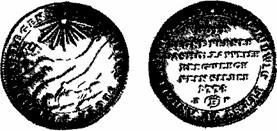
Рис. 98. 1/2 талера из серебра Гольцапфеля.
Конечно, более ценным материалом для исследований служат крупные монеты, но, оказывается, и полу-талеровики иногда очень интересны. К тому же они более редки, так как чеканились, как правило, в меньших количествах, чем целые талеры, предназначавшиеся в те годы, когда бумажных денег еще не было, а золотых выпускалось мало, для крупных платежей и накопления.
О том, как рождались мельчайшие из германских государств и каким образом появлялись на сцене «помазанники божьи», — можно получить представление на примере графства Гольцапфель — того самого, из месторождения которого было добыто серебро для полута-леровой монеты. Касаясь самых последних лет Тридцатилетней войны в Германии, К. Маркс в «Хронологических выписках» писал;
«Фердинанд III между тем в 1647 г снарядил новую армию под командованием генерала Меландера;
…этот субъект назывался теперь графом Гольцапфелем (он купил у Нассау-Гадамара поместья, которым Фердинанд III в 1643 г. дал титул графства Гольцапфель)». С получением от императора графского титула Петр Меландер приобрел право чеканить монету, однако в обстановке войны не успел этого сделать, а незадолго до конца войны, в мае 1648 г. был убит.
Гольцапфельское месторождение находится в 30 км к северу от г. Висбадена, в южных отрогах Рейнских Сланцевых гор. Его геологическое изучение началось около 2 тыс. лет тому назад римлянами, о чем говорилось выше. Надо полагать, что римляне месторождение скоро забросили. Сами же древние германцы этим делом не занимались, о чем, как говорилось выше, свидетельствует К. Тацит:
«В серебре и золоте боги им отказали — не знаю, по расположению ли к ним, или гневаясь на них».
О добыче в этом районе серебра в поздний период Римской империи и на протяжении средних веков не упоминается. Рудники Гольцапфеля стали разрабатываться вновь лишь с начала XVI столетия.
Двести лет назад германским рудознатцам, видимо, повезло больше, чем легионерам Курция Руфа, и они нашли богатые вторичным самородным серебром участки. Они оказались не очень большими, так как в середине XIX в., когда месторождение разрабатывалось Французской компанией, годовой доход составлял около 50000 флоринов, или 107000 франков, т. е. был не очень велик, причем сюда входил и доход от добычи других металлов. К этому времени стали известны некоторые геологические (тектонические) особенности месторождения: «Так, например, весьма долго принимали Голь-цапфельские жилы за исчезающие на некоторой части их падения, но более тщательное рассмотрение доказало в последнее время, что жилы эти, направление которых почти одинаково с пластованием окружающих пород, претерпели только обыкновенное боковое перемещение на 10 или 15 метров и перешли таким образом из одной плоскости расслоения в другую. Хотя обе части разорванной жилы и были соединены между собою почти горизонтальною разсединою, однакож эта последняя по узости своей укрылась от внимания при первых поисках».
К. И. Богданович со ссылкой на статью «Гольцап-фельский жильный пояс» (в немецком журнале) пишет, что «жилы, очень близкие к Фрейбергским колчеданисто-свинцовым, известны во многих местах Германии, именно в Рейнских сланцевых горах…».
Г. Шнейдерхен, характеризуя Рейнские сланцевые горы, выделяет «Нижний Лан, от Рейна до Мозеля (Хольцапфель — Эмс — Браубах). Здесь наблюдается несколько жильных свит, некоторые из них прослеживаются на большое расстояние, а другие — меньшей протяженности, но зато местами чрезвычайно мощные, отчасти залегающие по простиранию вмещающих пород, отчасти секущие их». Несмотря на несколько отличающуюся транскрипцию названия, в этом районе нетрудно увидеть тот, который почти 2000 лет назад начинали исследовать римляне и который 200 лет назад дал серебро для памятной монеты, поведавшей миру о Голь-цапфельском месторождении серебра.
Баден и ФюрстенбергВ «Опыте описательной минералогии» В. И. Вернадский в разделе о самородном висмуте заметил:
«Надо иметь в виду, что связь самородного висмута с выделением кобальтовых соединений более тесная, чем с встречаемыми здесь же соединениями серебра. Закономерность такого парагенезиса самородного висмута подтверждается нахождением его в жилах с кобальтовыми и серебряными минералами около Виттихена в Бадене… Серебро в этих жильных полях практически золота не содержит».
Эти слова о жилах с серебром в Бадене дали толчок к поиску дополнительных литературных источников, которые позволили бы определить происхождение серебра, пошедшего в 1836 г. на чеканку баденского талера с надписью «благословление баденскому горному делу» и изображением горных молотков и рудничного светильника (рис. 99).
Оказалось, что о Виттихене сообщается в уже упоминавшейся книге Эли де Бомона «Взгляд на рудники». В разделе «О рудниках Вожских гор и Черного леса» (Вогезов и Шварцвальда. — М, М.) написано: «В Фюр-стенберге, недалеко от Вольфаха, преимущественно же в Виттихене, находятся рудники медные, кобальтовые и серебряные. Виттихенские, за несколько пред сим лет, производили ежегодно 400 кг (25 пудов) серебра».
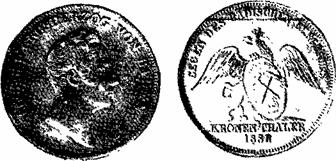
Рис. 99. Талер Бадена.
В другом месте Эли де Бомон отмечает: «В горах Черного леса, отделенных от Вожских долиною Рейна, но сложенных из тех же самых пород, находятся два цветущих свинцовых производства; одно в Баденвейлере, другое при Гохберге, недалеко от Фрейбурга. Оне вместе производят ежегодно 400 мет. квин. (1200 пуд.) свинца и 200 марок (около 3 пуд.) серебра».
Учитывая, что во Франции книга Эли де Бомона вышла в 1824 г., а на сбор материалов, их обработку, подготовку рукописи, издание книги ушло немало времени, — приведенные данные о добыче серебра следует отнести примерно к 1820 г. Казалось бы, что к талеру 1836 г. слова Эли де Бомона не имеют отношения. Но в «Горном журнале» № 12 за 1840 г. напечатана анонимная статья «Добыча золота и серебра в великом герцогстве Баденском», " в которой сообщается, что в этом государстве «находится много серебряных рудников. В Шварцвальде разрабатывался один из них, оставленный потом по убогому содержанию уже более двадцати лет. Но за два перед сим года работы в нем были возобновлены, и ныне он производит ежегодно серебра на 48000 гульденов (около 33000 рубл. серебром). Другие серебряные рудники все вместе производят в год только на 24000 гульденов, т. е. вполовину менее первого. Они расположены в окрестностях Фрейбурга в Кинцигской долине».
Хотя эта статья опубликована в 1840 г., можно допустить, что она пересказывает неизвестный литературный труд примерно двухлетней давности без поправок во времени. В этом случае возобновление работ на основном руднике и приходится на 1836 г. Поскольку же другие рудники имеют конкретный адрес — в окрестностях Фрейбурга в Кинцигской долине — остается сделать вывод, что основной рудник находится в Баденвейлере на юге Бадена, и именно из добытого в нем серебра отчеканен талер 1836 г.
Как показано выше, Эли де Бомон помещает Вит-тихен не в Бадене, а в Фюрстенберге. Объясняется это просто. Княжество Фюрстенберг (до 1716 г. — графство) существовало с середины XIII в., когда граф Урах выстроил замок и городок Фюрстенберг в Шварцвальде, а его младший сын Генрих (умер в 1284 г.), получив его в наследство, стал первым графом Фюрстенбергом. В 1806 г. с образованием Рейнского союза это княжество утратило свою самостоятельность, а его земли отошли в основном к Бадену, который, отдав свои территории за Рейном Наполеону, получил при его содей— ствии в семь раз больше на правом берегу Рейна за счет мелких государств, подобных Фюрстенбергу.
Но тем не менее, Фюрстенберг попал в орбиту поиска, и его результаты превзошли ожидания:
«Случай, — как говорят, — не надежен, но щедр!» Оказывается, в Фюрстенберге в XVIII в. четыре раза чеканились горнорудные талеры, связанные с находками новых месторождений или новых рудных залежей с серебром. При этом два талера явились источником ценных сведений о типах месторождений, два показывают время добычи с точностью до квартала и все четыре дают наименования рудников и другие географические данные.
Сведения о трех первых горнорудных талерах заимствованы из каталогов. В 1729 г. был отчеканен талер из серебра, добытого «в кобальтово-серебряном руднике св. Иосифа. На его оборотной стороне — „вид долины Кинцига с рудничными сооружениями“. В 1762 г. отчеканен талер из серебра, добытого „в кобальтово-серебряном руднике св. Софии близ Виттихена“. В 1767 г. отчеканены монеты в один талер (обычного размера), в 3, 4, 9 и 10 талеров (диаметром 64 мм, но разной тол — щины). На них пошло серебро, добытое „в руднике св. Венцеля близ Вольфаха в квартале воспоминаний“.
И, наконец, четвертый талер (рис. 100) — украшение коллекции горнорудных талеров. На его лицевой стороне князь Иосиф-Мария-Бенедикт и вокруг портрета длинный титул, в котором отдельные слова сокращены до одной буквы: «князь Фюрстенберга, ландграф и владетель Баара, Штюлингена, Хейлигенберга и Хаузена в Кинцигской долине»[39]. На оборотной стороне вверху надпись «с богом через искусство (горное — М. М.) и работу», под ней вид долины и рудника, внизу надпись «дар рудника Фридрих-Христиан, добыт в квартале скорби в 1790 г.».
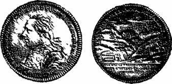
Рис. 100. Талер Фюрстенберга.
Этот замечательный талер, единственный в своем роде, показывает существовавшие в то время устройства по обогащению руд серебра и подготовке их к плавке: сбоку слева видна толчея, действующая от водоналивного колеса, а рядом ближе к центру — устройство для промывания размельченной руды. Таким образом, серебро для чеканки этих фюрстен-бергских монет добыто в одном рудном районе — в долинах р. Кинциг и впадающей в нее р. Вольфах, а также вблизи г. Виттихена, стоящего на водоразделе между ними, т е в том районе, который упоминают В. И. Вер — надский, Эли де Бомон и автор упомянутой анонимной статьи.
Интересно, что наиболее подробно этот в общем-то маленький рудный район охарактеризован Г. Шнейдер-хёном в его «Рудных месторождениях», но это объясняется тем, что он (снова «щедрый случай») проживал в неоднократно упоминавшемся выше г. Оренбурге и, естественно, был патриотом родных мест. Не вдаваясь в существо принятой Г. Шнейдерхёном классификации гидротермальных месторождений, отметим, что месторождения, давшие серебро для чеканки фюрстенбергских талеров, относятся, по Г. Шнейдерхёну, к «свинцово-серебряно-цинковой формации» и «серебряно-кобальто-никеле-висмуто-урановой формации».
В первой из формаций Г. Шнейдерхён выделяет «мезотермальные флюорит-баритовые галенитовые жилы (тип Шварцвальдский)» и указывает, что «галенит содержит много серебра, часто в виде шапбахита (AgBiS2 )». Жилы этого типа наблюдаются севернее Кин-цига на Вольфахе около г. Шапбаха» (давшего наименование минералу). Г. Шнейдерхён пишет, что здесь «находятся флюоритовые жилы (рудники Фридрих-Христиан и Херрензеген), барит которых в значительной сте — пени псевдоморфно замещен кварцем; вместе с последним наблюдаются также и богатый серебром галенит и халькопирит. Часто богатые компактные галенитовые массы с высоким содержанием металла встречаются в виде глыб в псевдоморфозном кварце». Так охарактеризовано месторождение, на котором работал рудник Фридрих-Христиан, давший серебро для талера 1790 г.
Во второй из названных формаций Г. Шнейдерхён выделяет «кальцито-цеолитовые сложные серебряные рудные жилы». В качестве примера приводится: «Долина Фронбах, жила Венцель. Отдельные участки жилы содержат очень богатые, благородные серебряные руды, особенно богатую серебром сурьмянистую блеклую медную руду и сурьмянистое серебро, в большинстве случаев вкрапленные в кальцит, представляющий жильный минерал. Месторождение разрабатывалось с 1766 по 1823 г.». Это месторождение дало серебро для талера и крупных монет 1767 г.
В этой же формации Г. Шнейдерхён выделяет «флю-орито-баритовые серебро— и висмутсодержащие кобальтовые жилы (тип Виттихен)». Жильные безрудные минералы — кварц, флюорит и барит, «сопровождающиеся самородным серебром и висмутом, причем серебро находится в корках серого кобальтового колчедана, а висмут — в корках купферникеля, белого никелевого колчедана, мышьяка, саффлорита и серого кобальтового колчедана». На этих жилах типа Виттихен работали кобальтово-серебряные рудники св. Иосифа и св. Софии, давшие серебро для чеканки фюрстенберг-ских талеров 1729 и 1762 гг., и эти жилы имел в виду В. И. Вернадский, когда писал о парагенезисе самородного висмута в жилах около Виттихена.
М. В. Ломоносов, критикуя косность и старые традиции, , пишет, что в Саксонии малолетние ребята, разбивающие руды, «несмотря на нынешнее просвещение еще служат на многих местах вместо толчейных мельниц, которые легко можно сделать для лучшего ускорения работы и для сбережения малолетних детей… толь много может закоренелый старый обычай». Далее великий русский ученый дает следующее описание толчейных мельниц, а также промывального устройства, аналогичных показанному на талере 1790 г.:
«Твердую и убогую руду толкут в толчеях… Число пестов бывает по рассуждению силы ветра или воды… Длиною бывают обыкновенно в шесть аршин, в четверть аршина шириною, из сухого кленового дерева на четыре грани вытесаны. На нижнем конце насажены железные четвероугольные наконечники, весом около полуторых пудов. Корыто делают из весьма толстого дерева; дно покрывают два дюйма толстою железною полосою, також и бока толстыми железными полосами обивают… Вал толщину имеет двух футов о двенадцати граней, в которых пальцы особливо укреплены, чтобы не все песты вдруг поднимались».
Единственное отличие вододействующей толчеи, показанной на талере, в том, что она имеет не 12, а 6 пестов. Может быть это сделано «по рассуждению силы воды», а может быть связано с недостатком площади на поле монеты.
«К вымыванию, — пишет М. В. Ломоносов, — делают широкие из досок составленные жолобы, с одной или со многими поперечными перегородками, несколько покато поставленные. Над верхним концом имеют они жолоб, из которого вода течет, а у нижнего выкопан канал и досками обложен, чтобы вода оным… вытекала. Толченую руду кладут в верхнюю перегородку, которая других глубже сделана, и мешают лопатами или железными скребками, от чего она перемывается и в другие ящики садится… За первою перегородкою руда садится всегда богатее, а в прочих чем от верху далее, тем убожее». На талере показано устройство из двух рядом стоящих желобов с семью перегородками в каждом. Необходимо уточнить, что М. В. Ломоносов написал о малолетних ребятах, которые «служат на многих местах вместо толчейных мельниц», под впечатлением пребывания в Саксонии в 1739 — 1740 гг., талер же был отчеканен через полстолетия и в другом сереброрудном районе.
Ангальт-БернбургВ Нижнем Гарце одним из горнорудных районов является Гарцгеродское плато. Свинцово — серебряные рудники близ г. Гарцгероде были открыты около 1490 г. В 1711 г. из серебра Гарцгероде князем Виктором-Амадеем Ангальт-Бернбургским был отчеканен медалеформ-ный талер, на котором (рис. 101, а) на одной стороне изображен рудокоп с самородком на плече и кольцевая надпись о божьем благословлении, а на другой — на фоне монетного двора — дерево и опирающийся на него медведь в короне и надпись «боже, поддержи рудники княжества Ангальт».
На примере ангальтских монет интересно рассмотреть, как иногда в княжеские гербы попадают замысловатые сюжеты.
В 1106 г. в Северной Германии вымер род Биллунгов, которому принадлежало герцогство Саксония. Затем этим герцогством недолго владел Супплингенбургский дом, а в 1137 г. оно перешло к дому Вельфов, владевшему также и Баварией. Герцог Генрих Лев, не ладивший, как писалось выше, с императором Фридрихом I Барбароссой, потерял в 1180 г. и Баварию, и Саксонию. На этом фоне, как пишет К. Маркс, «возвысилась другая фамилия Асканская, сохранившая за собой часть северной Германии; основатель ее граф Оттон Баллен-штедский женился на второй дочери последнего Биллун— га; его сын Альбрехт Медведь получил от Лотаря II маркграфство Северосаксонское, расширил его, стал называться с тех пор маркграфом Бранденбургским; так как его сыновья разделили наследство, то он стал основателем Бранденбургского и Ангальтского домов».
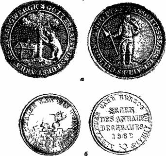
Рис. 101. Талеры Ангальт-Бернбурга 1711 г. (а) и 1862 г. (б).
Бранденбургская линия в конце XIV в. пресеклась, и потомки Альбрехта Медведя в дальнейшем правили только в Ангальте. В 1603 г. наследники разделили Ангальт на несколько линий, и одна из них — Ангальт-Бернбургская ввела медведя в короне в свой герб, потому он и оказался на талере 1711 г.
Но на последних ангальт-бернбургских горнорудных талерах этот медведь показан шагающим по стене средневекового замка. Это также объясняется исторически. Когда Генриху Льву было еще только 10 лет, Альбрехт Медведь, с разрешения императора Конрада III (правившего после Лотаря II, но до Фридриха I), пытался «прихватить» часть Саксонии и стать ее герцогом. «Но как только
Альбрехт Медведь захотел воспользоваться в Саксонии переданной ему Конрадом властью, он был изгнан из страны, саксонцы разрушили даже его родовой замок Ангальт; чтобы получить обратно маркграфство Бранденбург, — пишет К. Маркс, — он должен был по договору отказаться от герцогского достоинства в Саксонии».
Однако поскольку, как было показано, Альбрехт Медведь в дальнейшем оказался сильнее Генриха Льва, его позднейшие потомки изобразили на гербе Ангальт-Бернбурга мощного коронованного медведя, охраняющего ворота в восстановленный, прочный и незыблемо стоящий замок (рис. 101, 6).
Некоторые мелкие княжестваХарактеризуя процессы образования вторичного самородного серебра, В. И. Вернадский отмечает, что «при разработке месторождений любых серебряных руд, не тронутых человеком, всегда находят самородное серебро, выделенное природными процессами и являющееся первой наиболее богатой рудой, почти не требующей обработки. Книзу оно более или менее быстро сменяется первичными типами серебряных соединений и затем встречается в немногих отдельных участках как мине — ралогическая редкость».
Как упоминалось выше, В. И. Вернадский назвал вторичное самородное серебро эфемерным источником серебряных руд. Поэтому важно подчеркнуть, что именно из этого эфемерного источника было добыто серебро, пошедшее на чеканку интересных и необычных по оформлению монет германских государств с изображениями (панорамой или разрезом) рудников или с текстом, в котором содержится наименование месторождений. Выше были показаны такие монеты. Однако другие подобные монеты ставят исследователя в серьезные затруднения, так как в геологической литературе данные об упомянутых на монетах месторождениях серебра нередко отсутствуют — настолько они как источник серебра были мелки и быстро отработаны. На иных монетах с сюжетами из горнорудной тематики названия месторождений не указаны, а написано, например, «из серебра Вестфалии» (горнорудный талер архиепископства Кёльн, 1759 г.). В других случаях и название рудника есть, например, «добыто из рудника св. Антона-отшельника» (горнорудный талер епископства Гильдес-гейм, 1699 г.), но на каком месторождении или в каком пункте был этот рудник, не известно. Даже изучая монету, на которой дано название известного в прошлом рудника, давшего серебро на ее чеканку, не всегда удается получить все желаемые материалы о типе месторождения, времени и обстоятельствах его открытия и эксплуатации, размере добычи и т. п.
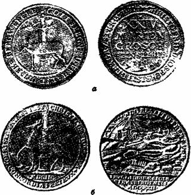
Рис. 102. Гульден 1726 г. (а) и талер 1722 г. (б) Штольберга (9-ю натур, вел.).
Талеры с сюжетами или надписями из горнорудного дела по-немецки называют «ausbeutetaler» (от aus-beute — эксплуатация, добыча), а по-английски «mining-thaler» (от mining — горный, рудный). Мы их называем горнорудными талерами. Обычно такие монеты чеканились из серебра, только что добытого из вновь открытого месторождения, или из серебра вновь открытой залежи серебряных руд на уже эксплуатирующемся месторождении руд других металлов.
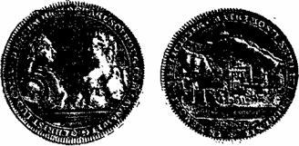
Рис. 103. Талер Вид-Рункеля 1762 г.
В первой половине XVIII в. в графстве Штольберг чеканились мелкие монеты, гульдены (рис. 102, а) и талеры с надписью: «Боже поддержи и умножь наши рудники». Но, кроме них, встречен талер 1722 г., на обороте которого показан вид г. Страссберга с рудниками на переднем плане (рис. 102, 6). Это позволило установить географическое положение штольбергских рудников. А затем были встречены краткие упоминания, что в Нижнем Гарце находится восточная часть Страсс-берг — Найдорфского жильного пояса. Здесь вокруг гранитного штока Рамберг расположены четыре жильные зоны: медно-мышьяк-висмут-вольфрам-плавиковая, полиметаллическая, сидеритовая и антимонитовая. Се-ребросодержащие свинцово-цинковые руды в настоящее время выработаны или непромышленны, однако в прошлом они некоторое количество серебра давали, что и отражено на монетах.
В крошечном графстве Вид-Рункель единственный раз в XVIII столетии в 1762 г. был отчеканен талер с панорамой города Рункель на берегу р. Лаан и рудником Вейер на горе за городом (рис. 103). Графство Вид-Рункель находилось среди земель герцогства Нас-сау, а в этом герцогстве в 1752 г. был отчеканен талер с надписью: «Из серебра рудника Мельбак» (рис. 104).
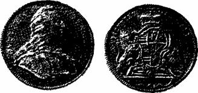
Рис. 104. Талер Нассау 1752 г.
Никаких литературных данных конкретно о рудниках Вейер и Мельбак не встречено. Однако есть сведения, что не позже 1000 года в Нассау в одном из рудников (он не назван) близ г. Вейльбурга началась добыча руды. В 1644 г. здесь провели главную водоотливную штольню, а в 1660 г. разработка приостановилась. С 1702 г. почти сто лет рудник снова давал руду. В середине XIX в. в Нассау, к которому в 1806 г. отошла территория Вид-Рункеля, действовало 24 рудника, раз — рабатывавших серебросодержащие полиметаллические руды. Видимо, среди них оказались и Вейер с Мельба-ком, на которых соответственно в 1762 и 1752 гг. были выявлены рудные залежи с самородным серебром.
На рис. 105 показан памятный гульден 1754 г., отчеканенный в княжестве Рейсе (старшей линии), имевшем территорию в 316 кв. км. На оборотной стороне монеты даны панорама и разрез рудника.
Вверху написано: «Добыча из рудника нового», внизу: «Новая уверенность». Скудные данные, которые можно отнести к серебру этого гульдена, удалось почерпнуть в труде К. И. Богдановича, отметившего, что жилы с сурьмяными рудами чаще «представляют только крайние члены других, именно серебро-свинцовых… особый случай благородной кварцевой формации серебряных руд». В качестве примера названы сурьмяные жилы «в Тюрингии около городов Шлейц и Грейц, где жилы пересекают палеозойские сланцы». Поскольку эти города находятся на территории княжества Рейсе, становится ясным, что на одной из таких жил была открыта рудная залежь с вторичным самородным серебром, которая вселила новую веру в месторождение.
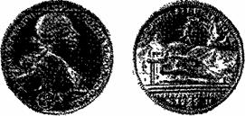
Рис. 105. Гульден Рейсса 1754 г.
В ландграфстве Гессен-Дармштадт в 1695 г. было выявлено жильное месторождение близ Рота в Брейтен-бахской долине. Уже в 1696 г. из добытого здесь серебра был отчеканен памятный талер (рис. 106). На одной его стороне изображены два рудокопа около молодой пальмы и вокруг надпись:
«Бог засеял (видимо, серебром. — М. М.) Гессен-Дармштадт», на оборотной — воротовщик над шурфом, что свидетельствует о добыче серебра вблизи поверхности, и другие надписи, восхваляющие гессенское горное дело. Известно, что это месторождение на цветные металлы разрабатывалось недолго-т-по 1816 г. Самородного серебра в нем в заметных количествах, видимо, больше не встречалось, и месторождение не оправдало надписей на талере.
В 1829 г. была отчеканена полуталеровая монета герцогства Саксен-Мейнинген (рис. 107) с надписью: «Благословление заальфельдскому горному делу» (видимо, рудник был близ г. Заальфельд — столицы потерявшего независимость графства Заальфельд).
В XVII и XVIII вв. в Заальфельдском округе промышленное значение как источник серебряных и кобальтовых руд имели так называемые кобальтовые трещины. Этими трещинами являются полости сбросов, проходящие в кристаллических породах древнего основания, красном лежне н верхнем цехштейне. Они выполнены баритом и отчасти кальцитом. Рудные минералы появляются только в непосредственной близости от медистых сланцев цехштейна, прослеживаясь на 15 — 20 м от них по вертикали. В 1829 г. (или 1828 г.) была найдена еще одна такая трещина, в верхней части которой оказалась рудная залежь с самородным серебром. Из этого серебра в 1829 г. и была отчеканена монета.
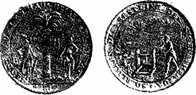
Рис. 106. Талер Гессен-Дармштадта 1696 г.
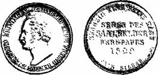
Рис. 107. 1/2 талера 1829 г. из серебра Заальфельда.
Перечень горнорудных монет не мал, и здесь приведены чем-либо примечательные экземпляры.
На все эти монеты в современных каталогах стоят высокие цены, а против талера графства Вид-Рункель — знаки «RR», означающие редкость второй степени. О полута-леровой монете Заальфельда 1829 г. есть данные, что она выпущена тиражом 2000 экземпляров. Масса монеты 11, 7 г, а надпись под датой говорит, что она из чистого серебра. Получается, что на весь тираж было использовано менее 25 кг серебра, или такое его количество, которого нехватило бы для того, чтобы заполнить ем — кость в 2, 5 литра. Можно быть уверенным, что еще меньшие, т. е. действительно эфемерные количества серебра пошли на чеканку более редких монет.
К. Маркс пишет: «Деньги в качестве монеты… говорят на разных языках и носят разные национальные мундиры». И хотя показанные в данном разделе монеты отчеканены в германских государствах, т. е. «говорят» на одном языке, но зато из-под чеканенного «национального мундира» (герба или портрета князя) каждой монеты видно серебро, добытое из собственного месторождения, являющегося национальной гордостью маленького государства.
Чеканка монет, прославляющих добычу серебра, началась в XVII в. в герцогстве Брауншвейг — Люнебург, , владевшем многими действительно богатыми серебряными рудниками в Гарце. В век Просвещения чеканка-таких монет стала модной и в других германских государствах. Князья и графы, на землях которых разрабатывались мелкие полиметаллические или иные сереб — росодержащие месторождения, широко вещали выпуском памятных монет о каждом случае находки даже небольшой залежи с вторичным самородным серебром или богатыми серебряными рудами. Часть таких монет, , промелькнув, как кометы, в обращении в своем государстве, попали вместе с другими своими современницами и предшественницами в мировой денежный поток: и затерялись в «безвозвратном, — как его называет-К. Маркс, — обращении на мировом рынке». Но в ряде случаев, особенно когда монеты были получены как: памятные подарки, они осели в нумизматических кол — лекциях или собраниях сувениров и семейных реликвий, , и нумизматическая эстафета принесла их в наш XX век. «Опыт описательной минералогии» В. И. Вернадского-помог разобраться, а иногда просто догадаться об источниках сырья для чеканки некоторых конкретных серебряных монет.